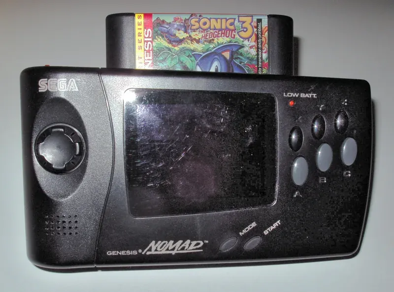

1995 年发布
Sega Nomad
便携版Mega Drive · 与家用机共用卡带 · 世嘉第二款掌机
约100万
全球销量(估)
16位
Motorola 68000
3.25寸
屏幕尺寸
$180
首发价格(美元)
📖 历史与背景
1995年10月，世嘉在北美发布Sega Nomad——这是一款便携版的Mega Drive（北美称Genesis）。它的设计理念与TurboExpress类似：将16位家用机缩小为掌机，直接使用家用机卡带。
Nomad本质上就是把Mega Drive的主板塞进了一个带LCD屏幕的便携外壳里。它使用与Mega Drive完全相同的Motorola 68000 + Z80双CPU架构，可以运行所有Mega Drive/Genesis卡带游戏——无需任何转换。
Nomad还配备了AV输出接口，可以连接到电视上当作家用机使用。它甚至支持第二个手柄接口，可以进行双人游戏。这在掌机中是极为罕见的——一台设备既是掌机又是家用机。
⚙️ 硬件规格
CPU
Motorola 68000 16位 (7.67MHz)
副CPU
Zilog Z80 8位 (3.58MHz)
屏幕
3.25寸 320×224 背光LCD
色数
同屏64色（库512色）
电池
6节AA电池（约2-3小时）
兼容
Mega Drive/Genesis全部卡带
输出
AV输出可接电视
重量
约430g
🎮 经典游戏阵容
刺猬索尼克2
1992 · 动作
Mega Drive经典护航作
怒之铁拳2
1992 · 动作
世嘉清版动作巅峰
梦幻之星4
1993 · RPG
世嘉RPG旗舰系列
光明力量
1992 · 战棋RPG
经典战棋RPG系列
索尼克3
1994 · 动作
索尼克系列第三作
格斗三人组
1992 · 格斗
怒之铁拳系列1代
魂斗罗：铁血军团
1994 · 动作
魂斗罗MD独占版
漫画地带
1995 · 动作
漫画风格创意动作
🏆 市场表现与影响
- 全球销量：约100万台（估算），仅在北美市场发售，日本和欧洲未正式发行
- 时代背景：1995年世嘉正处于32位时代过渡期——Saturn已发售，Nomad的推出时机尴尬，世嘉内部资源分散
- 续航问题：6节AA电池仅2-3小时续航，加上机身较重（430g），便携性大打折扣
- 市场定位：Nomad定位为「Mega Drive玩家的便携方案」——但当时Mega Drive已经进入生命周期末期，新用户更愿意等待Saturn或购买PlayStation
- 收藏价值：由于产量不大且功能独特（Mega Drive卡带掌机化），Nomad在复古游戏收藏圈有一定价值
💡 趣闻与冷知识
- Nomad从未在日本正式发售——日本市场只有类似概念但设计不同的「Mega Jet」（1993年，无屏幕的便携Mega Drive，需外接电视）
- Nomad可以通过AV线连接电视，变成一台完整的Mega Drive——这个「掌机变家用机」的功能在当时的掌机中独一无二
- Nomad支持第二个手柄接口——也就是说两个人可以看着Nomad的小屏幕进行双人对战（虽然实际上几乎看不清）
- Nomad的68000 CPU在掌机上产生了大量热量——长时间游戏后机身会明显发热
- Nomad是世嘉最后一款掌机——此后世嘉在2001年退出硬件市场，再未推出任何掌机或家用机